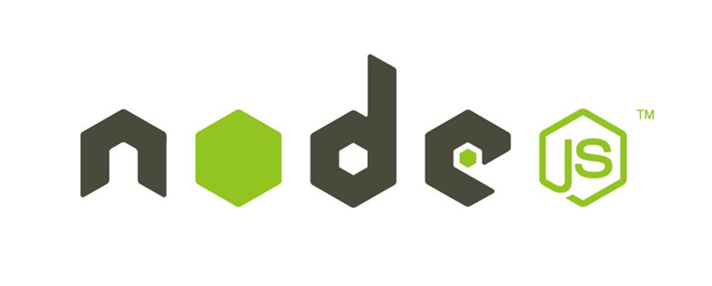
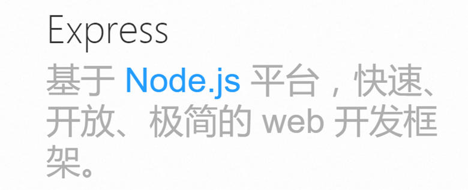

Node&Express
Nodejs

Node.js 是一个基于 Chrome V8 引擎的 JavaScript 运行环境。
Node.js 使用了一个事件驱动、非阻塞式 I/O 的模型，使其轻量又高效。
Node.js 的包管理器 npm，是全球最大的开源库生态系统。
Hello world
创建个hello.js的文件，粘贴代码：
|
|
req为请求体，用于获取与本次请求相关的信息，eg：请求类型为get还是post？res为响应体。
如果此时修改“Hello world”为“hello”，需要停掉服务器，重新开启。
可利用工具：
1、supervisor
每次修改代码后会自动重启
安装：npm install -g supervisor
执行：supervisor app.js
2、forever
虚拟机一关node服务就关了，不过forever可以让node服务不停止
Express

Express 是一个简洁而灵活的 node.js Web应用框架, 提供一系列强大特性帮助你创建各种Web应用。Express 不对 node.js 已有的特性进行二次抽象，只是在它之上扩展了Web应用所需的功能。丰富的HTTP工具以及来自Connect框架的中间件随取随用，创建强健、友好的API变得快速又简单
安装Express
1、通过 npm init 命令为项目创建一个 package.json 文件
此命令将要求输入几个参数，例如此应用的名称和版本。 可以直接按“回车”键接受默认设置即可，下面这个除外：
键入 app.js 或者你所希望的名称，这是当前应用的入口文件。如果你希望采用默认的 index.js 文件名，只需按“回车”键即可
2、接下来安装 Express 并将其保存到依赖列表中：
3、如果只是临时安装 Express，不想将它添加到依赖列表中，只需略去 –save 参数即可：
|
|
hello world
进入项目中文件夹，创建一个名为 app.js 的文件，然后将下列代码复制进去：
app.listen：和node中http模块的http.createServer(function(){…}).listen()效果一致。app.set(name, value)和app.get(name)：set()为设置 name 的值设为 value，get()为获取设置项 name 的值。如 app.set('port', process.env.PORT || 3000)就是设置项目的port，在后面使用http.createServer时就可以使用app.get('port')来获取
通过如下命令启动此应用：
Express应用生成器
通过应用生成器工具 express 可以快速创建一个应用的骨架。
1、通过如下命令安装：
|
|
2、在当前工作目录下创建一个命名为 myapp 的应用：
|
|
生成的项目结构：
|
|
然后安装所有依赖包：
|
|
启动这个应用：
MacOS 或 Linux 平台：
|
|
Windows 平台使用如下命令：
|
|